Un ordenador dentro de otro: VirtualBox, VMware e Hyper-V.
←→ para moverte ·P pantalla completa rueda del ratón o clic en el índice
Unidad 3
Contenidos de la unidad
Siete apartados de teoría, cuatro prácticas, el test masivo y el examen. Primero, qué es una máquina virtual y cómo funciona; después, crearla, configurarla, conectarla a la red y medir cuánto rinde. Pulsa en cualquiera para ir directamente a él.
Qué es una máquina virtual, anfitrión e invitado, y para qué sirve.
Criterio b
Valorar ventajas e inconvenientes
Aislamiento, instantáneas y ahorro frente a rendimiento, recursos y licencias.
Criterio c
Instalar software libre y propietario
VirtualBox (libre) se instala en clase. De VMware Workstation Pro (propietario y gratuito) se ven los pasos de la instalación.
Criterio d
Crear máquinas para sistemas libres y propietarios
Una para Ubuntu, otra para Windows 11 y una ligera para las prácticas de red.
Criterio e
Configurar máquinas virtuales
Memoria, procesadores, discos, instantáneas, clones y modos de red.
Criterio f
Relacionar la máquina con el anfitrión
Sus archivos, su proceso, sus adaptadores de red y lo que comparte con tu Windows.
Criterio g
Hacer pruebas de rendimiento
Medir la misma prueba fuera y dentro, y explicar la diferencia con números.
Herramienta del curso
VirtualBox
Es software libre y gratuito. Con él se crean y se usan todas las máquinas virtuales del curso.
Concepto clave
Máquina virtual
Programa que imita un ordenador completo (procesador, memoria, disco, red, pantalla) en el que se instala un sistema operativo y se usa como si fuera un equipo independiente.
Recibe una parte de los recursos del equipo real y los ve como propios. El sistema que se instala dentro funciona como en un PC de verdad.
Virtual. 3. adj. Fís. Que tiene existencia aparente y no real. Real Academia Española, Diccionario de la lengua española, entrada virtual.
Virtualización
Máquina real y máquina virtual
Máquina real
El ordenador físico: se toca, se enchufa y se puede abrir.
●Hardware de verdad: placa, procesador, memoria y disco.
●El sistema operativo arranca directamente sobre él.
●Si se estropea el sistema, hay que reinstalar o recuperar.
Máquina virtual
Un ordenador imitado por un programa dentro del real.
●Hardware simulado, con una parte de los recursos del real.
●Para el equipo real es un proceso y unos archivos: se copia, se mueve y se borra.
●Si se estropea, se vuelve en segundos a una instantánea: una copia guardada de cómo estaba la máquina.
Lo que no cambia: dentro de una máquina virtual se instala, se configura y se rompe un sistema operativo exactamente igual que en un PC de verdad.
Virtualización
Anfitrión e invitado
●Sistema anfitrión (host): el instalado en el equipo real. Sobre él se instala el programa de virtualización.
●Sistema invitado o huésped (guest): el instalado dentro de una máquina virtual.
●Un anfitrión puede tener varios invitados, encendidos a la vez si le llegan la memoria y el procesador.
●En el aula: Windows 11 es el anfitrión; Ubuntu y Windows 11 dentro de VirtualBox son los invitados.
Figura 3.1. Capas de un equipo con máquinas virtuales. Elaboración propia.
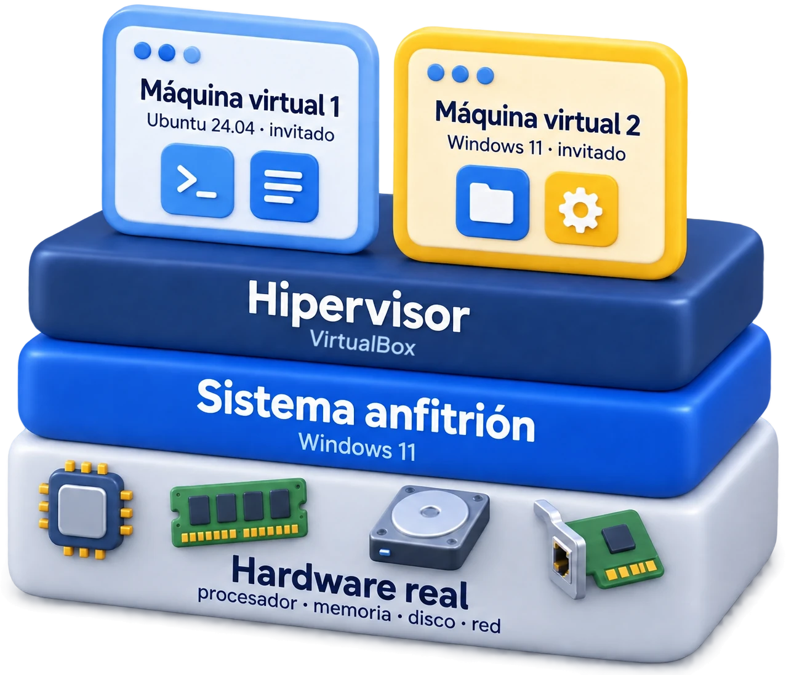
Virtualización
Para qué sirve una máquina virtual
Uso
Qué significa
Ejemplo
Probar sistemas operativos
Instalar un sistema, o varias versiones, sin tocar el del equipo ni particionar el disco.
Probar Ubuntu antes de instalarlo de verdad.
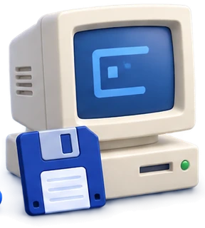
Usar programas de otro sistema
Usar un programa que no funciona en tu sistema: uno antiguo o de otro sistema operativo.
Un programa de gestión que solo va en Windows XP.
Probar programas que no son de fiar
Lo que haga se queda dentro; luego se vuelve a como estaba.
Analizar un adjunto sospechoso.
Aprender sin miedo a romper
Instalar, configurar y estropear sin riesgo para el equipo real.
Las prácticas de este curso.
Varios servidores en un equipo
Un servidor físico potente con muchas máquinas virtuales, cada una con su servicio.
Correo, web y base de datos de una empresa.
La nube
El servidor que se alquila en internet suele ser una máquina virtual de un centro de datos.
Un servidor en Amazon Web Services o Azure.
Tabla 3.1. Usos de las máquinas virtuales. Las cuatro primeras son usos en un PC; las dos últimas explican por qué hoy casi todos los servidores son virtuales.
Virtualización
Ventajas e inconvenientes
Ventajas
✓Aislamiento: lo que pase dentro no afecta al anfitrión.
✓Instantáneas: se guarda cómo está la máquina y se vuelve a ese punto en segundos.
✓Varios sistemas a la vez sin particionar el disco.
✓Portabilidad: se lleva a otro equipo copiando archivos.
✓Se aprovecha mejor el hardware, que casi siempre está ocioso.
✓Ahorro: menos equipos físicos, menos energía y espacio.
Inconvenientes
✗Rinde menos que el equipo real, sobre todo el disco y los gráficos.
✗Le quita memoria, procesador y disco al anfitrión.
✗Juegos y 3D, limitados; algún dispositivo no funciona dentro.
✗Si cae el anfitrión, caen todas.
✗Cada sistema invitado necesita su licencia.
✗Ocupan mucho disco: decenas de GB cada una.
Comprueba lo aprendido
Una máquina virtual es…
Selecciona una opción.
Concepto clave
Hipervisor
Software que crea y ejecuta las máquinas virtuales y reparte entre ellas el hardware real: memoria, turnos de procesador, disco y red.
También se llama monitor de máquinas virtuales (VMM). VirtualBox, VMware e Hyper-V son hipervisores: el «software de virtualización».
El hipervisor
Hipervisor de tipo 1 y de tipo 2
Tipo 1
También se llama nativo o bare metal. Funciona directamente sobre el hardware.
●Debajo no hay ningún sistema anfitrión: el hipervisor es lo primero que arranca.
●Es más rápido y se usa en servidores, centros de datos y la nube.
●Se maneja desde otro equipo, a través de la red.
●Un ejemplo es VMware ESXi, el de los servidores de las empresas.
Máquina virtual
Máquina virtual
Hipervisor
Hardware
Tipo 2
También se llama alojado. Es un programa que funciona sobre un sistema anfitrión.
●Se instala y se abre como cualquier otra aplicación.
●Es cómodo para un puesto de trabajo, pero algo más lento.
●Si se cierra el programa o se apaga el anfitrión, las máquinas virtuales se paran.
●Un ejemplo es VirtualBox, el de este curso.
Máquina virtual
Máquina virtual
Hipervisor (programa)
Sistema anfitrión
Hardware
Figura 3.2. Hipervisor de tipo 1 y de tipo 2. En este curso usamos uno de tipo 2. Hyper-V se activa desde Windows, pero se coloca por debajo de él: es de tipo 1. Elaboración propia.
El hipervisor
La ayuda del procesador
Los procesadores actuales traen instrucciones para que el hipervisor trabaje rápido y seguro: es la virtualización asistida por hardware.
●Intel la llama VT-x, y AMD la llama AMD-V o SVM.
●Sin ella no arranca ninguna máquina virtual de 64 bits.
●En algunos equipos viene desactivada de fábrica.
●Se activa en la UEFI, en el mismo menú en el que se cambia el orden de arranque (UT2). La opción se llama Intel Virtualization Technology o SVM Mode.
Si pone Deshabilitado, hay que activarla en la UEFI. Sin ella, VirtualBox no puede arrancar la máquina virtual.
Maqueta de elaboración propia de la pestaña Rendimiento del Administrador de tareas (Ctrl + Mayús + Esc).
Pregunta a la clase
¿Tiene tu ordenador la virtualización activada?
Míralo ahora en tu PC.
Dónde mirarlo
Abre el Administrador de tareas con Ctrl + Mayús + Esc.
Entra en Rendimiento › CPU y busca la línea Virtualización.
Pondrá Habilitado o Deshabilitado.
Si alguien tiene Deshabilitado, se activa en la UEFI antes de la práctica 3.4.
El hipervisor · relación con el anfitrión
Cuando Windows ya lleva un hipervisor
Windows 11 puede arrancar su propio hipervisor, Hyper-V, por debajo de él mismo. Entonces Windows ya no funciona directamente sobre el hardware, sino encima de Hyper-V.
Lo activan algunas funciones de Windows, como la Integridad de memoria, que viene activada de fábrica en muchos equipos nuevos.
En ese caso, VirtualBox tiene que funcionar a través de Hyper-V y va más lento.
Sin hipervisor de Windows
Máquina virtual
VirtualBox
Windows 11
Hardware
Con Hyper-V por debajo
Máquina virtual
VirtualBox
Windows 11
Hyper-V
Hardware
La tortuga verde. VirtualBox la muestra en su barra de estado cuando funciona a través de Hyper-V.
Figura 3.3. El hipervisor de Windows por debajo del sistema. Elaboración propia.
El hipervisor · relación con el anfitrión
Cómo ver si Windows lleva un hipervisor
Abre msinfo32 (Información del sistema) y baja hasta el final del Resumen del sistema.
Información del sistema (msinfo32) de Windows 11. Captura: elaboración propia.
Figura 3.4. Final del Resumen del sistema en un Windows 11 sin hipervisor en marcha. Captura: elaboración propia.
Sin hipervisor en marcha
Salen las cuatro filas que empiezan por Hyper-V. La fila Seguridad basada en virtualización pone No habilitado.
Con hipervisor en marcha
Las filas de Hyper-V no salen. En su lugar pone: «Se detectó un hipervisor. No se mostrarán las características necesarias para Hyper-V.»
Desactivar la Integridad de memoria baja la seguridad del equipo. No se toca sin permiso.
Pregunta a la clase
¿Un emulador de consola es una máquina virtual?
Un emulador de Game Boy en el PC también hace creer a un programa que está en otra máquina. ¿Es lo mismo que VirtualBox?
Se parecen, pero no son lo mismo
Emular Imitar otro procesador distinto traduciendo cada instrucción: la Game Boy, la PS2 o un móvil Android en el PC. Funciona, pero lento.
Virtualizar Ejecutar las instrucciones directamente en el procesador real, que es del mismo tipo, con la ayuda de VT-x o AMD-V. Casi a velocidad real.
Un emulador es una máquina virtual en sentido amplio, pero en este módulo virtualizar es lo segundo: mismo procesador, otro sistema operativo.
El hipervisor
Máquina virtual y contenedor
Máquina virtual
Un ordenador entero imitado.
●Sistema operativo completo, con su propio núcleo.
●Arranca en segundos o minutos; ocupa gigas.
●Puede llevar otro sistema distinto del anfitrión.
Contenedor
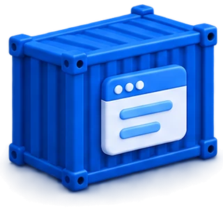
Una aplicación aislada con lo que necesita (Docker).
●Comparte el núcleo del anfitrión: no hay otro sistema entero.
●Arranca en milisegundos; ocupa megas.
●Solo ejecuta programas del mismo sistema que el anfitrión (Linux sobre Linux).
No compiten: en la nube es normal tener contenedores dentro de máquinas virtuales. En este módulo trabajamos con máquinas virtuales.
El hipervisor
De los mainframes a la nube
Figura 3.5. Línea de tiempo de la virtualización. Elaboración propia.
Comprueba lo aprendido
¿Qué es VirtualBox?
Selecciona una opción.
Software de virtualización
Los tres más usados en el PC
Oracle VirtualBox
VMware Workstation Pro
Hyper-V
Empresa
Oracle
Broadcom
Microsoft
Licencia
Libre: su código está publicado.
Propietario, pero gratuito para cualquier uso.
Incluido en Windows 11 Pro, Education y Enterprise. No está en Home.
Dónde se instala
En Windows, Linux y macOS.
En Windows y Linux.
Solo en Windows.
Tipo
Tipo 2: es un programa del anfitrión.
Tipo 2: es un programa del anfitrión.
Tipo 1: se activa desde Windows, pero se coloca por debajo de él.
Tabla 3.2. Los tres programas de virtualización más usados en el PC. En este curso se trabaja con VirtualBox. Datos de las páginas oficiales de cada fabricante.
Software de virtualización · repaso de la UT1
Gratis no es lo mismo que libre
Libre: VirtualBox
Licencia GPL, versión 3.
●El código está publicado: se puede estudiar, modificar y redistribuir.
●Además es gratis, pero eso no es lo que lo hace libre.
●Tiene una parte libre y otra propietaria, el Extension Pack, que es un paquete aparte.
Propietario: VMware
Contrato de licencia de Broadcom.
●Se usa sin pagar, también en empresas, pero el código no está publicado.
●No se puede modificar ni redistribuir, y la empresa puede cambiar las condiciones.
●Hyper-V es otro caso: va incluido en la licencia de Windows.
El Extension Pack es un paquete aparte de VirtualBox, con licencia propietaria, que añade funciones extra, como el escritorio remoto o el cifrado de discos. En este curso no se instala, porque no hace falta.
Lo que distingue el software libre son las libertades de la licencia (usar, estudiar, modificar y compartir), no el precio. Se vio en la UT1.
Software de virtualización
Otros hipervisores que te vas a encontrar
Nombre
Tipo
Licencia
Dónde se usa
Proxmox VE
1
Libre
En los servidores de muchas pequeñas empresas y centros educativos.
VMware ESXi
1
Propietario
En los servidores de los centros de datos de las grandes empresas.
Espacio aislado de Windows
1
Incluido en Windows
En Windows 11 Pro, para abrir algo sospechoso en un Windows de usar y tirar: al cerrarlo, se borra todo.
Tabla 3.3. Otros hipervisores. Basta con saber que existen y para qué se usan.
Software de virtualización · relación con el anfitrión
Herramientas de integración
Son programas que se instalan dentro del invitado para que se entienda con el anfitrión.
En VirtualBox se llaman Guest Additions, y en sus menús en español, «complementos del invitado». En Ubuntu hay que instalarlas.
La pantalla se ajusta al tamaño de la ventana.
Portapapeles compartido copiar fuera y pegar dentro.
Arrastrar y soltar archivos entre los dos sistemas.
Carpetas compartidas una carpeta del anfitrión vista dentro.
Hora sincronizada y controladores de vídeo y red más rápidos.
Sin ellas, la máquina funciona, pero la pantalla no se adapta y no se comparten ni el portapapeles ni las carpetas. No las confundas con el Extension Pack: es otra cosa, va en el anfitrión y en este curso no se instala.
Software de virtualización · libre
Instalar VirtualBox
1Descargar el instalador de virtualbox.org › Downloads › Windows hosts.
2Ejecutarlo y dar permiso de administrador. Si avisa de que falta el Microsoft Visual C++ Redistributable, hay que instalar antes ese paquete de Microsoft y volver a empezar.
3Aceptar el contrato de licencia y dejar marcados todos los componentes.
4Aviso de red: mientras se instalan los adaptadores de red virtuales, la conexión se corta unos segundos. Es normal: se pulsa Yes.
5Aviso de Python (Missing Dependencies): solo importa a quien quiere manejar VirtualBox con programas en Python. Se pulsa Yes y se sigue.
6Install y, al terminar, Finish.
Oracle VirtualBox 7.2.22✕
!
Warning: Network Disconnection
During the installation of Oracle VirtualBox 7.2.22 Networking, your network will be disconnected. Ensure any operations requiring network connection are complete before continuing.
YesNo
Quiere decir: «Mientras se instala la parte de red de VirtualBox, el equipo se quedará sin red. Termina antes lo que estés haciendo en internet».
Maqueta de elaboración propia del aviso de red del instalador de VirtualBox. El instalador está en inglés; el programa, en español.
Software de virtualización · propietario
Así se instala VMware Workstation Pro
En este curso no se instala, pero conviene saber cómo es la instalación del otro programa.
1El instalador se descarga del portal de soporte de Broadcom, y para eso hace falta una cuenta. El asistente está en español.
2Se acepta el contrato de licencia. El texto del contrato está en inglés.
3En Configuración compatible, el instalador dice si Windows tiene su propio hipervisor en marcha, como se vio en la sección 3.2.
4Se deja la carpeta que propone. En la experiencia del usuario, una casilla marcada envía al fabricante datos de cómo se usa el programa: se puede desmarcar.
5Se pulsa Instalar y, al acabar, Finalizar.
6Al abrirlo no pide clave, y los menús están en español.
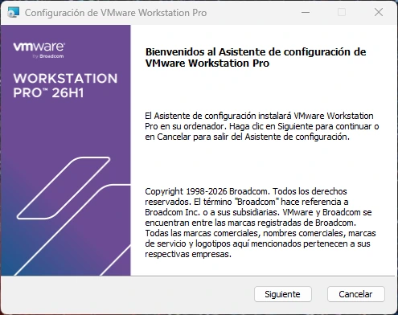
VMware Workstation Pro 26H1 (Broadcom) en Windows 11 Pro. Captura: elaboración propia.
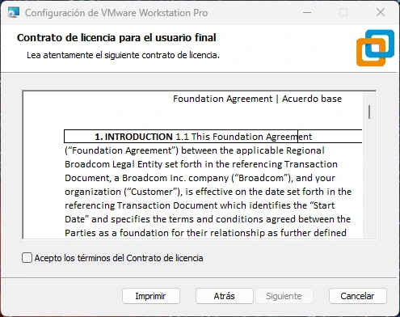
VMware Workstation Pro 26H1 (Broadcom) en Windows 11 Pro. Captura: elaboración propia.
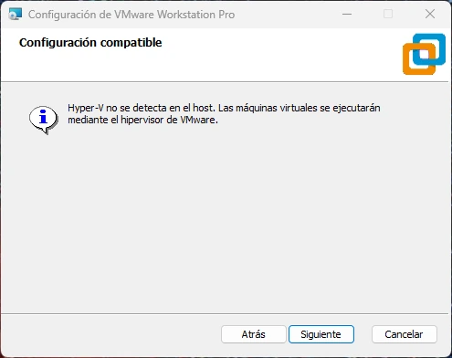
VMware Workstation Pro 26H1 (Broadcom) en Windows 11 Pro. Captura: elaboración propia.
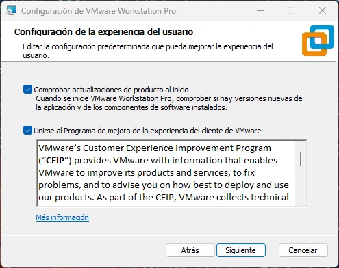
VMware Workstation Pro 26H1 (Broadcom) en Windows 11 Pro. Captura: elaboración propia.
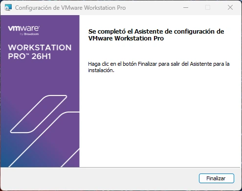
VMware Workstation Pro 26H1 (Broadcom) en Windows 11 Pro. Captura: elaboración propia.
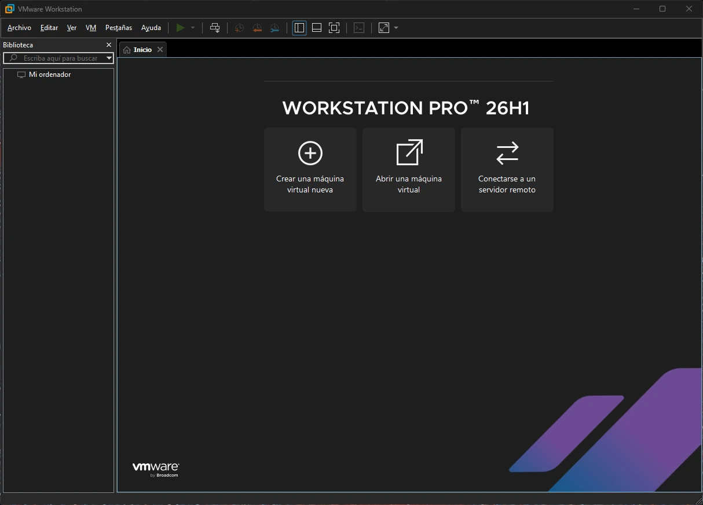
VMware Workstation Pro 26H1 (Broadcom) en Windows 11 Pro. Captura: elaboración propia.
Ejercicio interactivo
¿Quién es el anfitrión?
Lee el caso y pulsa los selectores: el sistema anfitrión, cuántos invitados hay, el tipo de hipervisor y la licencia del programa.
Junta lo de las tres primeras secciones: anfitrión e invitado (3.1), tipos de hipervisor (3.2) y licencias de cada programa (3.3). Pista y Resolver ponen la racha a cero.
Comprueba lo aprendido
¿Cuál de estos programas es software libre?
Selecciona una opción.
Práctica
Instala el software de virtualización
Individual, en clase, en una sesión. Si hay que instalar algo, sale de la carpeta compartida del profesor: nada de webs de descargas.
1.Comprueba en el Administrador de tareas que la virtualización está habilitada. Después, mira en msinfo32 si Windows tiene ya su hipervisor en marcha.
2.Abre VirtualBox y mira qué versión tienes en Ayuda › Acerca de VirtualBox. Si no está instalado, o si el profesor te lo indica, instálalo o actualízalo desde la carpeta compartida.
3.Crea tu carpeta de máquinas: C:\VM\apellido-nombre.
4.Rellena la ficha con los datos de tu equipo.
La ficha
●La versión de VirtualBox y su licencia.
●La RAM, los hilos del procesador y el disco libre de tu equipo.
●Si la virtualización está habilitada, y si el hipervisor de Windows está en marcha o no.
●El adaptador de red nuevo que aparece con ipconfig /all: el de VirtualBox, «VirtualBox Host-Only Ethernet Adapter», y su dirección IPv4.
Entrega
La ficha, en clase
Cubre
Criterios c y f del RA5
La máquina por dentro
El hardware virtual
Componente
Qué se configura
Ojo
Procesadores
Cuántos procesadores ve la máquina.
No más de la mitad de los del equipo real.
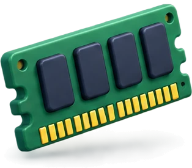
Memoria
La RAM que ve la máquina.
Lo que usa la máquina se le quita al anfitrión.
Disco duro
Un archivo del anfitrión que hace de disco, con su tamaño máximo.
Ocupa sitio en el disco del anfitrión.
CD/DVD
Una imagen ISO, como si fuera un disco metido en el lector.
El instalador del sistema arranca desde ella.
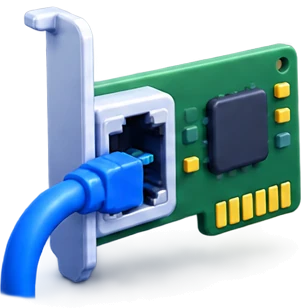
Adaptador de red
Una tarjeta de red virtual.
Viene puesta y ya sale a internet.
Pantalla
La memoria de vídeo y la aceleración 3D.
Si la pantalla sale negra, se quita la aceleración 3D.
Firmware y seguridad
BIOS o UEFI (UT2), arranque seguro y TPM, un chip de seguridad que aquí es virtual.
Windows 11 los exige; Ubuntu, no.
Tabla 3.4. El hardware de una máquina virtual. La memoria y los procesadores solo se cambian con la máquina apagada.
La máquina por dentro · VirtualBox
El hardware virtual en VirtualBox
1Detalles. En la ventana principal se elige una máquina y se ve todo su hardware de un vistazo.
2Configuración › Sistema. Base Memory es la memoria. UEFI, Secure Boot y TPM Version son el firmware.
3Configuración › Pantalla. Video Memory es la memoria de vídeo y 3D Acceleration, la aceleración 3D.
4Configuración › Almacenamiento. Aquí están el disco .vdi y la imagen ISO metida en el lector.
La memoria y los procesadores se cambian con la máquina apagada. Arriba, el botón Expert enseña todas las opciones.
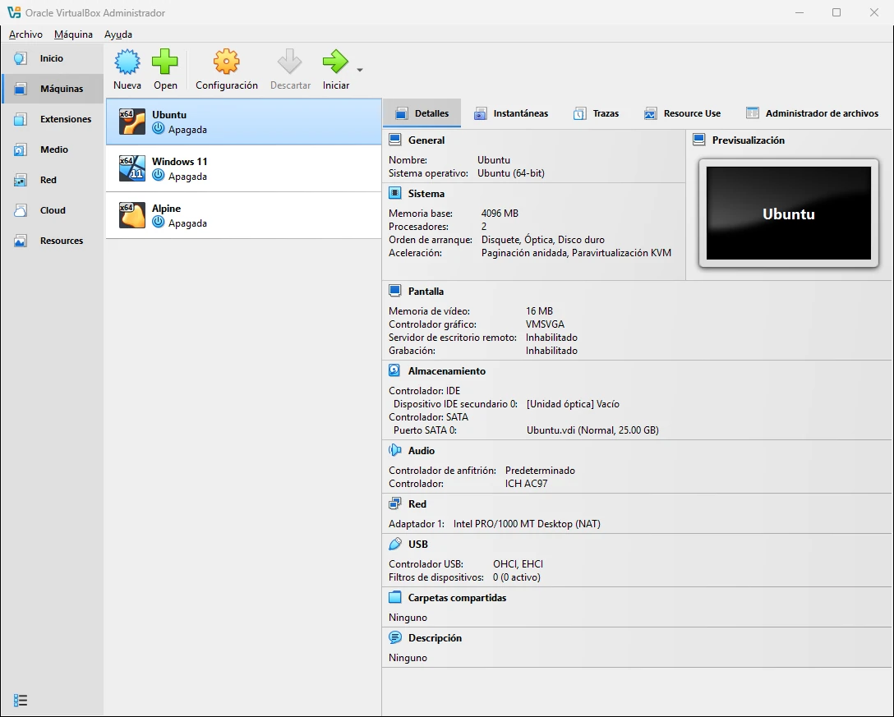
Oracle VirtualBox 7.2 (virtualbox.org) en Windows 11 Pro. Captura: elaboración propia.
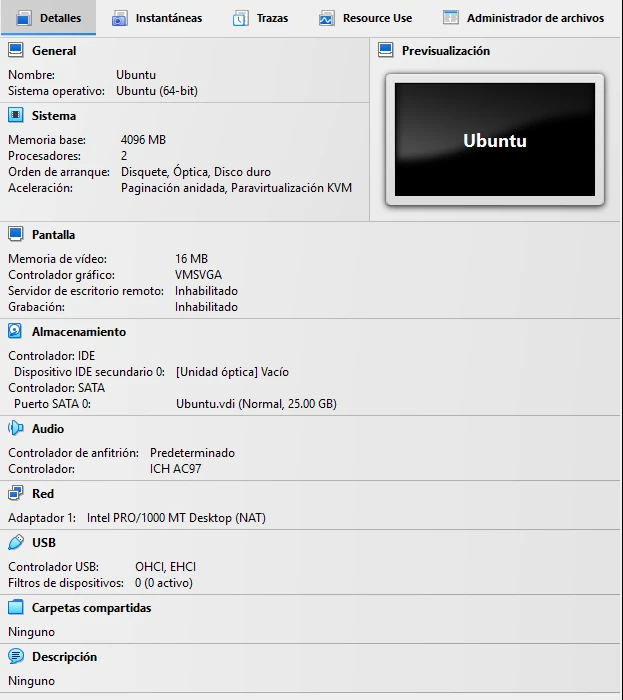
Oracle VirtualBox 7.2 (virtualbox.org) en Windows 11 Pro. Captura: elaboración propia.
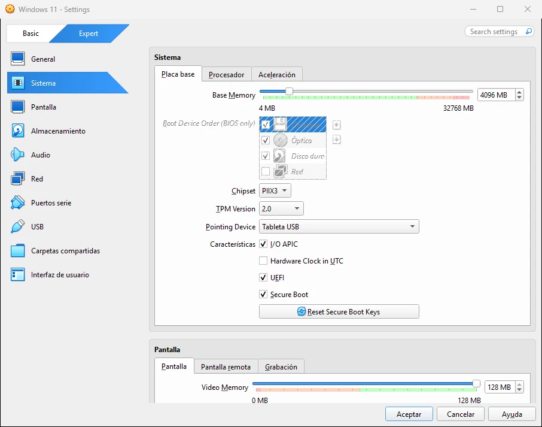
Oracle VirtualBox 7.2 (virtualbox.org) en Windows 11 Pro. Captura: elaboración propia.
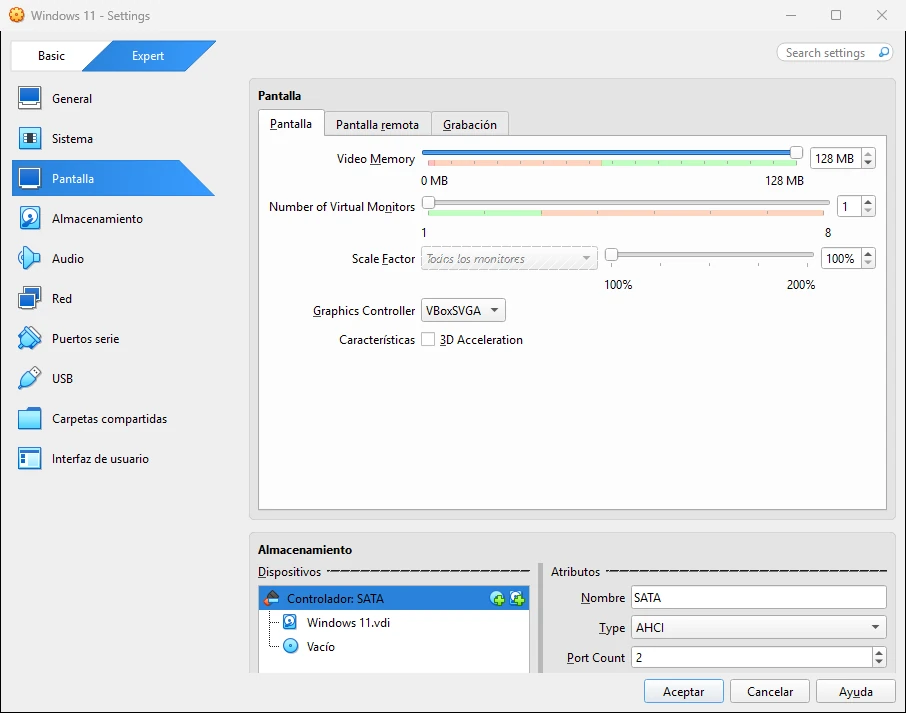
Oracle VirtualBox 7.2 (virtualbox.org) en Windows 11 Pro. Captura: elaboración propia.
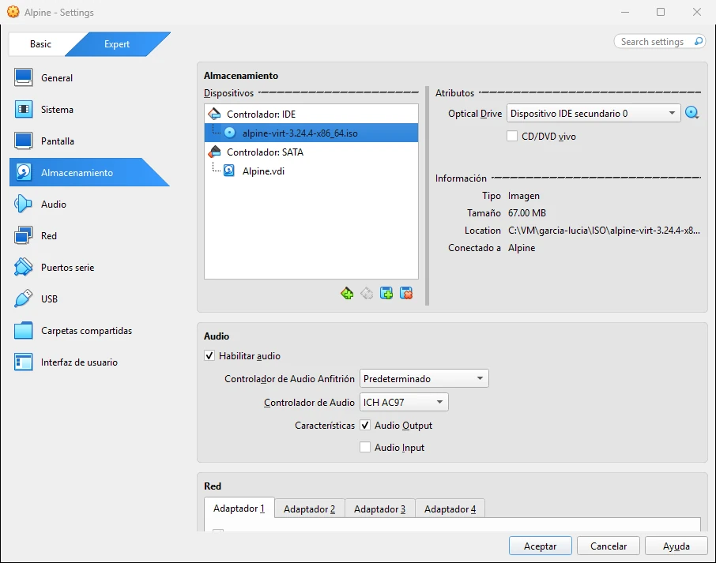
Oracle VirtualBox 7.2 (virtualbox.org) en Windows 11 Pro. Captura: elaboración propia.
La máquina por dentro
Discos virtuales
Formato
Programa
VDI
VirtualBox: su formato nativo
VMDK
VMware (VirtualBox también lo abre)
VHD y VHDX
Hyper-V
QCOW2
QEMU y KVM
Al crear una máquina, VirtualBox propone un disco VDI dinámico. Para que sea fijo, se marca la casilla Reservar completamente.
Tabla 3.5. Formatos de disco virtual. El disco se puede ampliar después, con la máquina apagada.
lo que ocupa en el disco del anfitriónlo que aún no ocupa
Dinámico
Se le pone un tamaño máximo, pero el archivo solo ocupa lo que se ha escrito y va creciendo. Con Windows 11 recién instalado, ocupa unos 25 GB.
Fijo
El archivo ocupa todo su tamaño aunque el disco esté vacío. Va algo más rápido, pero tarda en crearse y gasta el disco del anfitrión.
Figura 3.17. Un disco de 64 GB con Windows 11 recién instalado. En el aula, los discos se crean siempre dinámicos. Elaboración propia.
La máquina por dentro · relación con el anfitrión
Una máquina virtual es una carpeta de archivos
VirtualBox: la carpeta de cada máquina
.vboxLa configuración de la máquina, en texto..vbox-prevLa configuración anterior, de reserva..vdiEl disco virtual.SnapshotsLa carpeta de las instantáneas.LogsLa carpeta de los registros (.log): lo que ha pasado en cada arranque.
De otros programas
.vmdkEl disco virtual de VMware..vhdxEl disco virtual de Hyper-V.
Para cualquier programa
.isoLa imagen de un disco de instalación..ova .ovfUna máquina exportada.
Tabla 3.6. Archivos de una máquina virtual. Copiar la carpeta entera, con la máquina apagada, es copiar la máquina.
Maqueta de elaboración propia de la carpeta de una máquina de VirtualBox, con los nombres reales. Los tamaños son de ejemplo.
VirtualBox guarda cada máquina en una carpeta con su nombre. Por defecto, esas carpetas están en VirtualBox VMs, dentro de la carpeta del usuario. En el aula van en C:\VM\apellido-nombre.
Ejercicio interactivo
¿Qué es este archivo?
Sale el nombre de un archivo o de una carpeta de una máquina virtual. Elige qué guarda y de qué programa es el formato. Los formatos abiertos valen para cualquier programa.
Pista y Resolver ponen la racha a cero.
La máquina por dentro · relación con el anfitrión
Cuánto darle a cada máquina
La memoria que usa una máquina se le quita al anfitrión, y puede llegar a usar toda la que se le ha dado. Si hay varias máquinas encendidas, su memoria se suma. En el módulo seguimos tres reglas:
1Al anfitrión con Windows 11 se le dejan al menos 4 GB de memoria.
2Cada máquina recibe como mucho la mitad de los hilos del procesador. Los hilos son los «procesadores lógicos» del Administrador de tareas.
3El disco se crea dinámico, para que ocupe solo lo que se escribe.
se lo queda el anfitriónpara las máquinasno cabeUna casilla = 1 GB.
Equipo de 8 GB: Ubuntu y Windows 11 a la vez
Al anfitrión se le dejan 4 GB, así que para las máquinas quedan 8 − 4 = 4 GB. Ubuntu cabe, pero los 4 GB de Windows 11 no caben: se encienden por turnos.
Equipo de 16 GB: cuatro máquinas a la vez
Ubuntu, Windows 11 y dos máquinas ligeras de 1 GB suman 4 + 4 + 1 + 1 = 10 GB. Al anfitrión le quedan 16 − 10 = 6 GB, más de los 4 que necesita: caben todas.
La máquina por dentro
Requisitos de los sistemas que vamos a instalar
Ubuntu 24.04 LTS Desktop
Windows 11
En el aula
Procesador
2 núcleos a 2 GHz
2 núcleos a 1 GHz, de 64 bits
2 procesadores
Memoria
4 GB
4 GB
4 GB, una máquina grande encendida cada vez
Disco
25 GB
64 GB
Dinámico: Ubuntu ocupa unos 12 GB reales y Windows 11, unos 25 GB
Firmware
BIOS o UEFI
UEFI con arranque seguro y TPM 2.0
TPM virtual en la de Windows
¿Por qué no Ubuntu 26.04, la última? Pide 6 GB de memoria, y en un equipo de 8 GB con Windows 11 de anfitrión no cabe.
Comprobar los requisitos antes de elegir una versión es parte del trabajo de un técnico.
Tabla 3.7. Requisitos mínimos publicados por Canonical y Microsoft, y configuración de las máquinas del aula.
Ejercicio interactivo
¿Cabe en mi ordenador?
Con las reglas de reparto: al anfitrión, 4 GB como mínimo; a cada máquina, la mitad de los hilos como mucho; el disco dinámico ocupa lo escrito y el fijo, todo.
Pista rellena la siguiente casilla y explica la cuenta. Resolver lo completa todo. Las dos ponen la racha a cero.
Comprueba lo aprendido
¿Qué formato de disco es el nativo de VirtualBox?
Selecciona una opción.
Crear y usar · VirtualBox
Crear una máquina virtual en VirtualBox
1Máquina › Nueva (Ctrl + N). El asistente sale en inglés.
2VM Name: Ubuntu. VM Folder: C:\VM\apellido-nombre.
3ISO Image: la ISO de Ubuntu 24.04. VirtualBox reconoce el sistema y rellena OS, OS Distribution y OS Version. Si pone «Ubuntu 24.10», déjalo así.
4Proceed with Unattended Installation («seguir con la instalación desatendida») sale marcada: desmárcala.
¿Por qué? Con esa casilla marcada, VirtualBox instala Ubuntu él solo y no se ve ningún paso. Además, crea un usuario sin permisos de administrador.
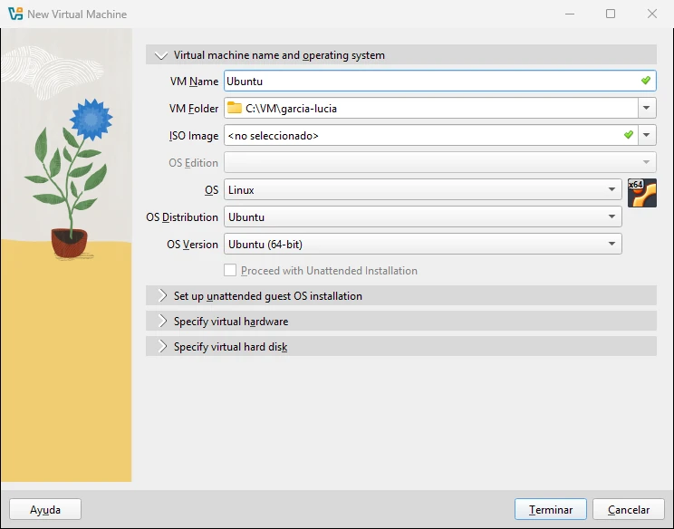
Oracle VirtualBox 7.2 (virtualbox.org) en Windows 11 Pro. Captura: elaboración propia.
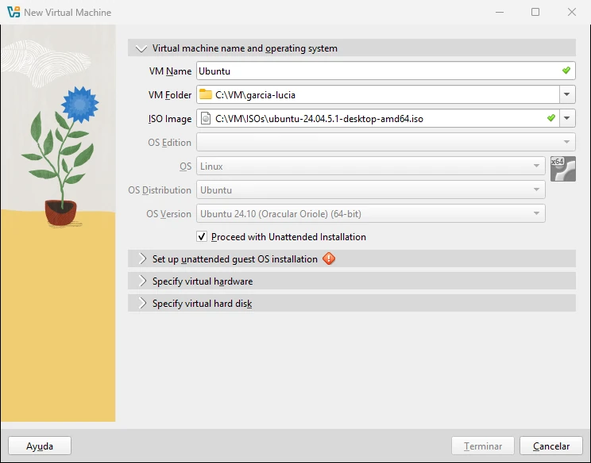
Oracle VirtualBox 7.2 (virtualbox.org) en Windows 11 Pro. Captura: elaboración propia.
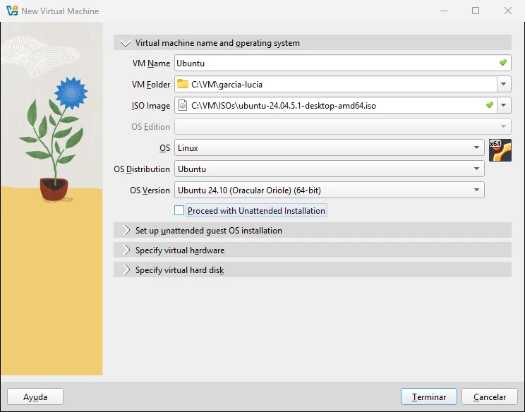
Oracle VirtualBox 7.2 (virtualbox.org) en Windows 11 Pro. Captura: elaboración propia.
Crear y usar · VirtualBox
Crear una máquina virtual: hardware y disco
5Specify virtual hardware: VirtualBox propone 2048 MB y 1 procesador. Cambia Base Memory a 4096 MB y Number of CPUs a 2. Use EFI, sin marcar.
6Specify virtual hard disk: ya sale un disco nuevo de 25 GB, tipo VDI y sin marcar Reservar completamente (dinámico). Se deja así.
7Terminar y, en la ventana principal, Iniciar.
Máquina del curso
Memoria
CPU
Disco
Ubuntu 24.04
4 GB
2
25 GB
Windows 11
4 GB
2
64 GB
Alpine Linux
512 MB
1
8 GB
Alpine Linux es una distribución de Linux muy pequeña y sin escritorio. Arranca en segundos con muy poca memoria, y por eso es la máquina ligera de las prácticas.
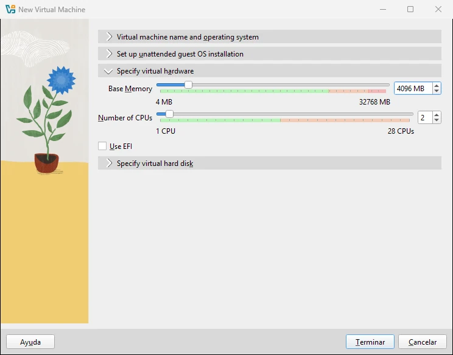
Oracle VirtualBox 7.2 (virtualbox.org) en Windows 11 Pro. Captura: elaboración propia.
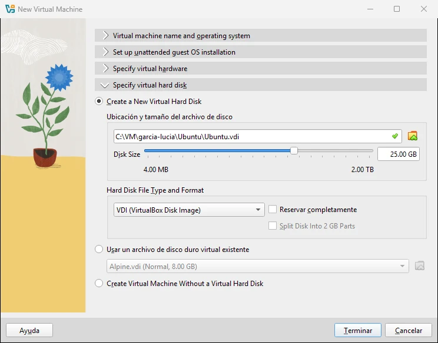
Oracle VirtualBox 7.2 (virtualbox.org) en Windows 11 Pro. Captura: elaboración propia.
Crear y usar · Windows 11
Windows 11 necesita UEFI, arranque seguro y TPM
Windows 11 no se instala en un ordenador que no tenga estas tres cosas. En una máquina virtual pasa lo mismo.
●UEFI: el firmware que pone en marcha el ordenador. Sustituye a la antigua BIOS.
●Arranque seguro: la UEFI solo deja arrancar un sistema operativo firmado, de confianza.
●TPM 2.0: un chip que guarda claves de seguridad, como las del cifrado del disco.
En VirtualBox es sencillo: al elegir el tipo Windows 11, VirtualBox activa él solo la UEFI, el arranque seguro y el TPM 2.0.
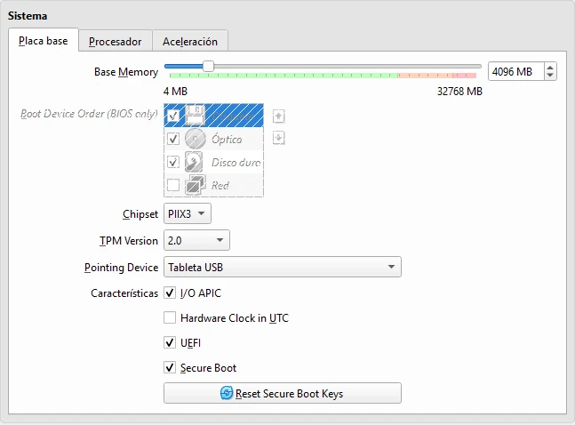
Oracle VirtualBox 7.2 (virtualbox.org) en Windows 11 Pro. Captura: elaboración propia.
Figura 3.23. Configuración › Sistema de la máquina Windows 11: TPM Version 2.0 y las casillas UEFI y Secure Boot marcadas. Captura: elaboración propia.
Crear y usar · VirtualBox
Arrancar, entrar y salir
Qué quiero hacer
Cómo se hace en VirtualBox
Encender
Iniciar, la flecha verde de la ventana principal.
Meter el teclado y el ratón dentro
Un clic dentro de la ventana de la máquina.
Devolverlos a Windows
La tecla anfitrión: el Ctrl derecho.
Mandar Ctrl + Alt + Supr dentro
Anfitrión + Supr.
Pantalla completa
Anfitrión + F. Se sale igual.
Apagar bien
Desde el propio sistema invitado, como en un PC. «Apagar la máquina» desde VirtualBox es como tirar del cable.
Dejarla como está
Cerrar la ventana y elegir Guardar el estado de la máquina. Al iniciarla otra vez, sigue donde estaba.
Tabla 3.8. Atajos básicos. «Anfitrión» es la tecla anfitrión, el Ctrl derecho.
Crear y usar · VirtualBox
La ventana de una máquina encendida
1Tecla anfitrión: el Ctrl derecho. VirtualBox la muestra abajo a la derecha, en la barra de estado. Al pulsarla, el teclado vuelve a Windows, y el ratón también, si se había quedado dentro.
2Ver: pantalla completa (Anfitrión + F) y modo escalado (Anfitrión + C).
3Dispositivos: el lector de CD, la red, el USB, las carpetas compartidas, el portapapeles compartido y el CD de las Guest Additions.
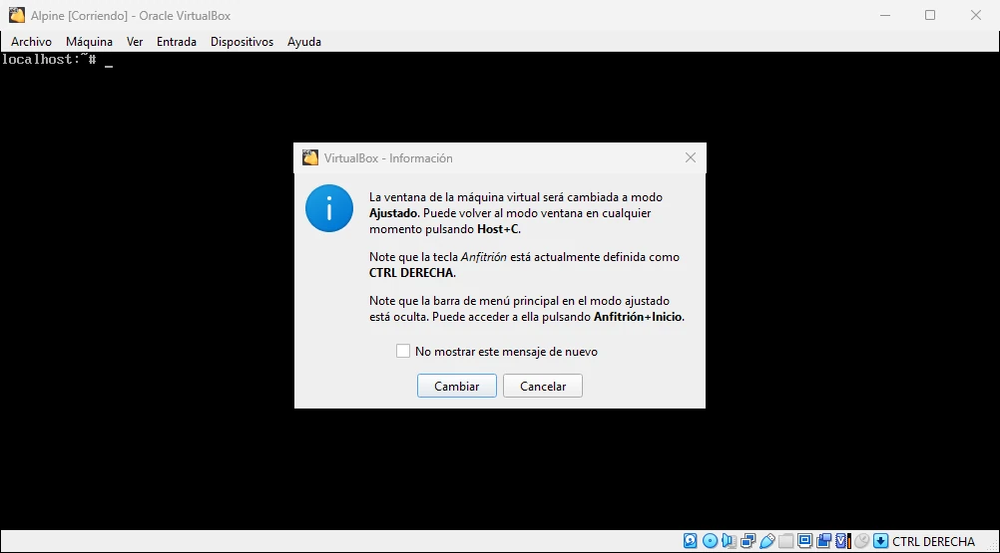
Oracle VirtualBox 7.2 (virtualbox.org) en Windows 11 Pro. Captura: elaboración propia.
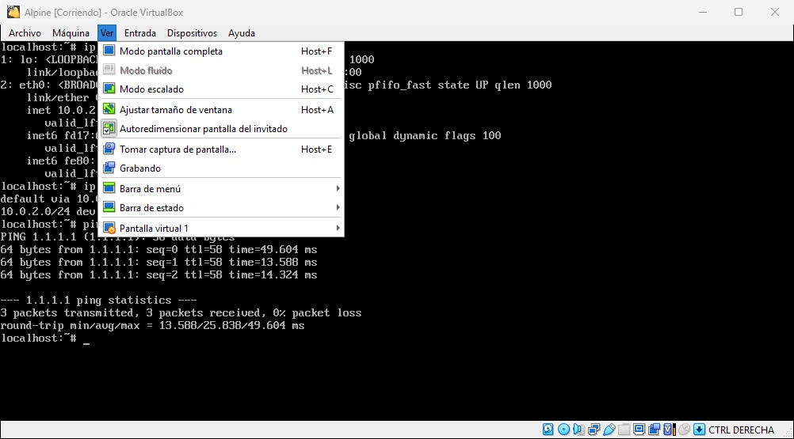
Oracle VirtualBox 7.2 (virtualbox.org) en Windows 11 Pro. Captura: elaboración propia.
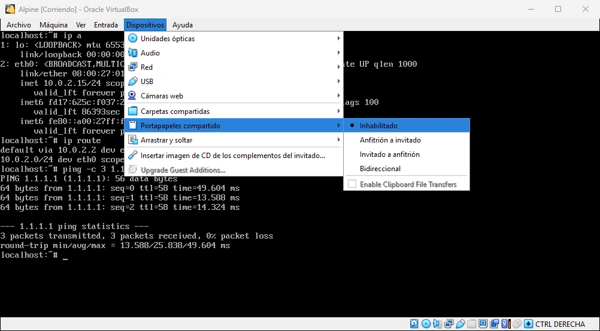
Oracle VirtualBox 7.2 (virtualbox.org) en Windows 11 Pro. Captura: elaboración propia.
Crear y usar · Ubuntu 24.04
Instalar Ubuntu: hasta el disco
1Al encender la máquina sale un menú. Try or Install Ubuntu ya está elegido: pulsa Intro o espera.
2Elige Español. En las pantallas de accesibilidad, teclado y red, deja lo que sale y pulsa Siguiente.
3El instalador ofrece actualizarse: pulsa Actualizar ahora. Después, ciérralo y ábrelo otra vez con el icono Install Ubuntu 24.04.5 LTS.
4Deja Instalación interactiva y Selección predeterminada. En Optimice el equipo, las dos casillas sin marcar.
5Borrar disco e instalar Ubuntu, que ya sale elegida.
Tranquilidad: «el disco» es el archivo de 25 GB de la máquina virtual. El disco de tu PC no se toca.
6Cree su cuenta: escribe tu nombre. El usuario y el nombre del equipo, escríbelos tú y sin tildes. Con «Lucía García», el instalador propone «luc-a-garc-a».
7Huso horario: escribe Madrid y elige Madrid (Madrid, Spain). Ojo: la primera sugerencia es un Madrid de Colombia.
8Revise sus elecciones: pulsa Instalar y espera a que termine.
9Reiniciar ahora. Cuando pida en inglés que quites el medio de instalación, pulsa Intro: VirtualBox saca la ISO del lector él solo.
!
Al entrar por primera vez, Ubuntu ofrece pasar a la versión 26.04. Pulsa No actualizar: la 26.04 necesita 6 GB de memoria y no cabe en los ordenadores del aula.
Configuración › Carpetas compartidas › Añadir carpeta compartida: la ruta, el nombre y Automontar. En Ubuntu sale en /media/sf_nombre. Para poder abrirla, escribe una vez en la Terminal sudo usermod -aG vboxsf $USER y reinicia la máquina.
Pendrive USB
Dispositivos › USB › el pendrive.
La red
Según el modo del adaptador: sección 3.8.
El portapapeles, arrastrar y soltar y las carpetas compartidas solo funcionan con las Guest Additions instaladas.
Lo compartido es una puerta en el aislamiento. Un pendrive conectado a la máquina deja de verse en el anfitrión, y un virus dentro de la máquina podría llegar a la carpeta compartida.
Concepto clave
Instantánea
snapshot
Copia del estado de la máquina en un momento (el disco y, si está encendida, la memoria) a la que se vuelve en segundos.
No es una copia de seguridad: depende del disco original. Muchas instantáneas ocupan espacio y hacen la máquina más lenta.
Figura 3.41. Dos instantáneas y el estado actual de una máquina. ¿Algo ha salido mal? Se restaura «Antes de usuarios» y es como si no hubiera pasado nada. Elaboración propia.
Norma del curso: antes de tocar, instantánea.
Crear y usar
Clonar: completo o enlazado
Clon completo
Una copia independiente de la máquina.
●Ocupa lo mismo que el original.
●Funciona aunque se borre el original.
●Para llevarla a otro equipo o guardarla aparte.
Clon enlazado
Comparte el disco del original a partir de una instantánea.
●Solo guarda las diferencias: ocupa muy poco y se crea en segundos.
●No funciona sin el original.
●Para laboratorios: varias máquinas iguales en el mismo equipo.
Al clonar, elige que la tarjeta de red reciba una MAC nueva. El nombre del equipo dentro del sistema se queda igual.
Crear y usar · formato abierto
Exportar e importar: OVF y OVA
Un formato abierto para llevar una máquina a otro equipo. OVF: un archivo que describe la máquina, con sus discos al lado. OVA: lo mismo, empaquetado en un solo archivo.
Tu PC · VirtualBox
Archivo › Exportar servicio virtualizado › la máquina › formato Open Virtualization Format › archivo .ova.
→
Alpine.ova
→
Otro PC · VirtualBox
Archivo › Importar servicio virtualizado › el archivo .ova › el nombre y la carpeta › Terminar.
Como el formato es abierto, el mismo .ova también lo abren otros programas de virtualización, como VMware. Con el de VirtualBox, VMware avisa primero de que no cumple del todo el estándar, y lo importa al pulsar Volver a intentar.
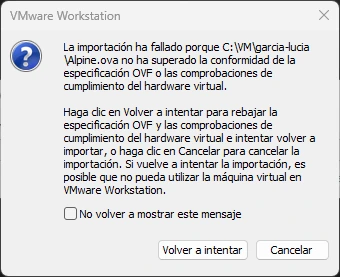
VMware Workstation Pro 26H1 (Broadcom) en Windows 11 Pro. Captura: elaboración propia.
Figura 3.42. Una máquina de VirtualBox llevada a otro equipo con un archivo OVA. Elaboración propia. Figura 3.43. El aviso de VMware Workstation Pro al importar el Alpine.ova de VirtualBox. Captura: elaboración propia.
Crear y usar · VirtualBox
Instantáneas, clonar y exportar en VirtualBox
1Pestaña Instantáneas de la máquina: Tomar para hacer una y Restaurar para volver a ella.
2Máquina › Clonar: el nombre, Clonación completa o Clonación enlazada, y Generar nuevas direcciones MAC.
3Archivo › Exportar servicio virtualizado: la máquina, el formato y el archivo .ova.
4Archivo › Importar servicio virtualizado: el archivo .ova, el nombre y la carpeta.
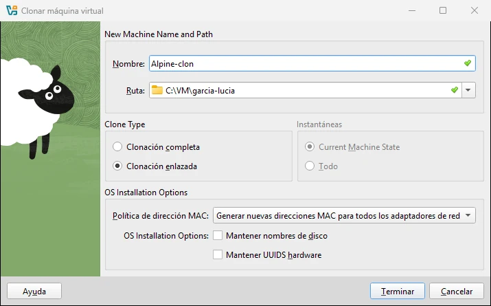
Oracle VirtualBox 7.2 (virtualbox.org) en Windows 11 Pro. Captura: elaboración propia.
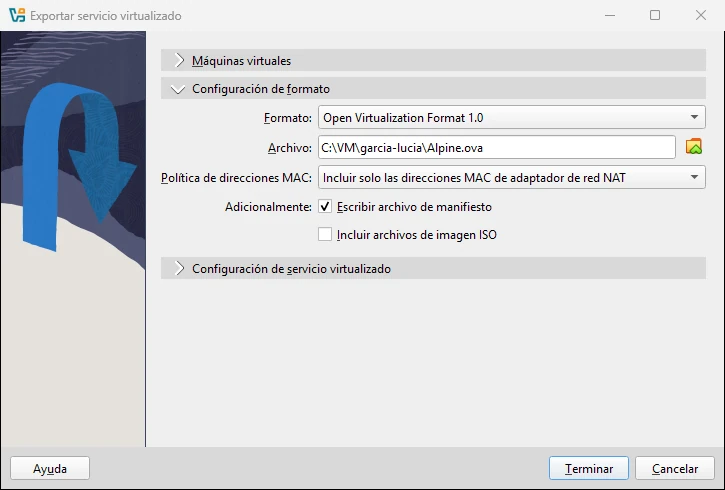
Oracle VirtualBox 7.2 (virtualbox.org) en Windows 11 Pro. Captura: elaboración propia.
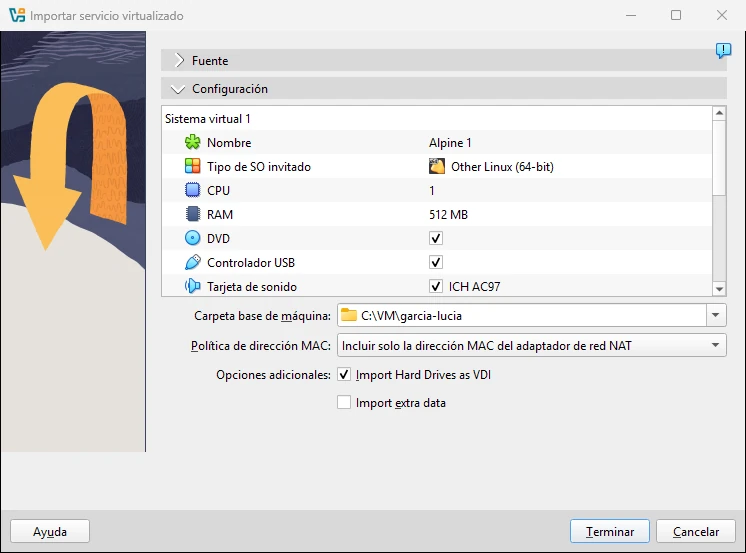
Oracle VirtualBox 7.2 (virtualbox.org) en Windows 11 Pro. Captura: elaboración propia.
Pregunta a la clase
Vas a probar un programa sospechoso en tu máquina virtual. ¿Qué haces antes?
Cuatro pasos
1Instantánea antes de nada.
2Red desconectada (o, como mucho, solo anfitrión): que no pueda conectarse a internet ni a otros equipos.
3Nada compartido: sin carpetas compartidas, sin portapapeles, sin pendrives.
4Al terminar, volver a la instantánea: como si no hubiera pasado nada.
Comprueba lo aprendido
¿Qué ocupa menos espacio en el disco del anfitrión?
Selecciona una opción.
Práctica
Tus máquinas virtuales
Parte 1 · Ubuntu
Individual, en clase y en VirtualBox. Las máquinas se quedan en C:\VM\apellido-nombre para el resto del curso.
1.Crea la máquina Ubuntu sin instalación desatendida: 4 GB, 2 procesadores y disco VDI dinámico de 25 GB.
2.Instala Ubuntu 24.04 LTS con las opciones por defecto.
3.Instala las Guest Additions y prueba la integración: la pantalla se ajusta, copias y pegas entre los dos sistemas, usas una carpeta compartida y conectas un pendrive a la máquina.
4.Instantánea «Recién instalada». Cambia el fondo de escritorio, vuelve a la instantánea y comprueba que el cambio ha desaparecido.
5.Clon enlazado «Ubuntu-clon» a partir de esa instantánea.
Entrega
Nada: las máquinas se quedan en tu PC
Cubre
Criterios d, e y f del RA5
En un PC de 8 GB, una máquina grande encendida cada vez: Ubuntu o Windows 11, nunca las dos.
Práctica
Tus máquinas virtuales
Parte 2 · Windows 11 y Alpine
6.Crea la máquina Windows 11: 4 GB, 2 procesadores y disco dinámico de 64 GB. VirtualBox propone 80 GB: cámbialo. Comprueba que tiene UEFI, arranque seguro y TPM 2.0.
7.Arranca la ISO de Windows 11 hasta la primera pantalla del instalador. Apaga la máquina y haz la instantánea «Antes de instalar».
8.Crea la máquina Alpine con la ISO virt: 512 MB, 1 procesador y 8 GB. Entra como root y escribe ip a.
9.Exporta Alpine a un archivo OVA e impórtalo con otro nombre.
Alpine · entrar y ver la IP
localhost login: root
localhost:~# ip a
Entrega
Nada: las máquinas se quedan en tu PC
Cubre
Criterios d y e del RA5
En Alpine, root no tiene contraseña: lo escribes y entras. No hay escritorio, solo la consola.
Redes virtuales · vocabulario
La red de una máquina virtual
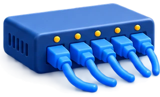
Red
Es un grupo de equipos conectados que pueden comunicarse entre ellos.
Ejemplo: los PC del aula forman una red.
Tarjeta de red
Es la pieza por la que un equipo se conecta a una red. Cada máquina virtual tiene una tarjeta virtual, que VirtualBox llama adaptador.
Ejemplo: el «Adaptador 1» de la máquina Alpine.
Dirección IP
Es el número que identifica a un equipo dentro de su red, como la dirección de una casa.
Ejemplo: tu PC del aula puede tener la 192.168.1.25.
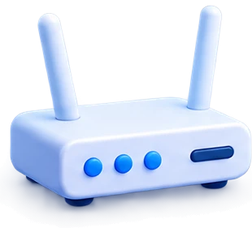
Router
Es el aparato que une dos redes. Por él salen a internet los equipos de una red.
Ejemplo: el router de tu casa une tu red con internet.
DHCP
Quien reparte las IP
El DHCP es el servicio que da una IP a cada equipo que se conecta, sin que nadie tenga que escribirla.
Ejemplo: en casa, el router da una IP al móvil.
Modo de red
En VirtualBox, cada adaptador tiene un modo de red. El modo decide con quién se comunica la máquina: con internet, con el anfitrión, con otras máquinas o con el aula.
Redes virtuales · comprobar
Cómo comprobar la red
●ip a enseña la IP de una máquina con Linux, como Ubuntu o Alpine.
●ipconfig enseña la IP de un equipo con Windows. Se escribe en la Terminal.
●ping y una IP comprueban si hay camino hasta ese equipo. Si contesta, hay camino.
Dos equipos están en la misma red si coinciden los tres primeros números de su IP. La 192.168.1.25 y la 192.168.1.120 están en la misma red; la 10.0.2.15, no.
Alpine · ¿qué IP tengo?
localhost:~# ip a
2: eth0: <BROADCAST,MULTICAST,UP,LOWER_UP>
inet 10.0.2.15/24 scope global eth0
¿Hay camino hasta internet?
localhost:~# ping -c 3 1.1.1.1
3 packets transmitted, 3 packets received, 0% packet loss
Windows · Terminal
C:\> ipconfig
Dirección IPv4. . . : 192.168.1.25
Salida recortada de una máquina Alpine en VirtualBox y de un ipconfig de ejemplo. Elaboración propia.
Redes virtuales · modo 1
NAT
Es el modo que trae cada máquina nueva. Cada máquina está sola detrás de su propio router virtual, y todas reciben la misma IP: 10.0.2.15.
✓ Sale a internet.
✓ Llega al anfitrión.
✕ No ve a las otras máquinas, aunque también estén en NAT.
✕ Ni el anfitrión ni los PC del aula llegan a ella.
En VirtualBox: «NAT».
Figura 3.47. Modo NAT, con las IP que da VirtualBox. Elaboración propia.
Redes virtuales · modo 2
Red NAT
Es como el NAT, pero varias máquinas comparten el mismo router virtual. Las máquinas conectadas a la misma Red NAT se ven entre ellas.
✓ Sale a internet.
✓ Llega al anfitrión.
✓ Ve a las otras máquinas de esa Red NAT.
✕ Ni el anfitrión ni los PC del aula llegan a ella.
En VirtualBox: «Red NAT». Antes hay que crear la red en la ventana principal: Red › Redes NAT › Crear.
Figura 3.48. Modo Red NAT, con las IP de una prueba real. Elaboración propia.
Redes virtuales · modo 3
Adaptador puente
La máquina se conecta a la red del aula como un equipo más, a través de la tarjeta de red del anfitrión. El router del aula le da una IP, igual que a los demás PC.
✓ Sale a internet.
✓ Se ve con el anfitrión y con las otras máquinas.
✓ Los PC del aula llegan a ella.
! Con wifi, o en redes que controlan los equipos, puede no funcionar.
En VirtualBox: «Adaptador puente».
Figura 3.49. Modo adaptador puente. Las IP del aula son de ejemplo. Elaboración propia.
Redes virtuales · modo 4
Adaptador solo anfitrión
Es una red privada entre el anfitrión y las máquinas, sin router. VirtualBox reparte las IP de la red 192.168.56.0, y el anfitrión tiene la 192.168.56.1.
✓ Se ve con el anfitrión, en los dos sentidos.
✓ Ve a las otras máquinas en solo anfitrión.
✕ No sale a internet.
✕ Los PC del aula no llegan a ella.
En VirtualBox: «Adaptador sólo anfitrión».
Figura 3.50. Modo solo anfitrión, con la red que crea VirtualBox. Elaboración propia.
Redes virtuales · modo 5
Red interna
Es una red que solo existe entre las máquinas que se conectan a ella. Ni siquiera el anfitrión está dentro, y nadie reparte IP: se ponen a mano.
✓ Ve a las otras máquinas de la misma red interna.
✕ No sale a internet.
✕ Ni el anfitrión ni los PC del aula llegan a ella.
En VirtualBox: «Red interna».
«No conectado»: la máquina tiene tarjeta de red, pero es como si no tuviera el cable puesto. No se comunica con nada.
Figura 3.51. Modo red interna. Las IP son de ejemplo. Elaboración propia.
Redes virtuales
Quién ve a quién
Modo
Sale a internet
La máquina llega al anfitrión
El anfitrión llega a la máquina
Las máquinas se ven entre ellas
Los PC del aula llegan a la máquina
NAT
✓
✓
✕
✕
✕
Red NAT
✓
✓
✕
✓
✕
Adaptador puente
✓
✓
✓
✓
✓
Adaptador sólo anfitrión
✕
✓
✓
✓
✕
Red interna
✕
✕
✕
✓
✕
No conectado
✕
✕
✕
✕
✕
«Llega» quiere decir que puede empezar la comunicación. En NAT, la máquina puede hacer ping al anfitrión, pero el anfitrión no puede hacer ping a la máquina. «Se ven entre ellas» habla de dos máquinas en el mismo modo y en la misma red.
Tabla 3.10. Conexiones de cada modo de red de VirtualBox, con los nombres de su lista «Conectar a». Elaboración propia a partir del manual de VirtualBox 7.2.
Redes virtuales · VirtualBox
El modo de red en VirtualBox
1Configuración › Red › Adaptador 1 › Conectar a, y se elige el modo.
2En NAT, ip a da la 10.0.2.15 y el ping a internet contesta.
3Dos máquinas en NAT tienen la misma IP. Por eso no pueden verse.
4En Red NAT tienen IP distintas, y el ping entre ellas contesta.
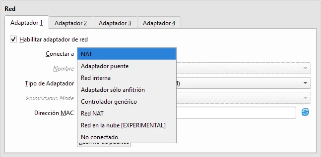
Oracle VirtualBox 7.2 (virtualbox.org) en Windows 11 Pro. Captura: elaboración propia.
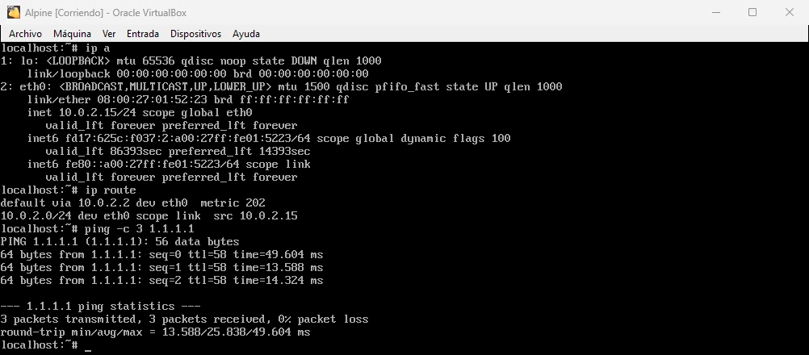
Oracle VirtualBox 7.2 (virtualbox.org) en Windows 11 Pro. Captura: elaboración propia.
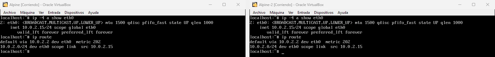
Oracle VirtualBox 7.2 (virtualbox.org) en Windows 11 Pro. Captura: elaboración propia.
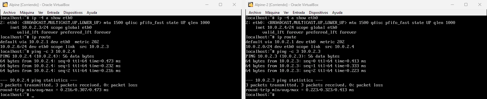
Oracle VirtualBox 7.2 (virtualbox.org) en Windows 11 Pro. Captura: elaboración propia.
Redes virtuales · relación con el anfitrión
Las redes vistas desde el anfitrión
Al instalar VirtualBox, Windows gana una tarjeta de red nueva: la de la red solo anfitrión. Por ella, el anfitrión está dentro de esa red, con la 192.168.56.1.
C:\> ipconfig /all
Adaptador de Ethernet Ethernet 2:
Descripción:
VirtualBox Host-Only Ethernet Adapter
Dirección IPv4: 192.168.56.1
Salida de ipconfig /all recortada. El nombre «Ethernet 2» cambia de un equipo a otro. Elaboración propia.
El cortafuegos de Windows no contesta al ping. Si una máquina hace ping al anfitrión y no recibe respuesta, la red puede estar bien. Prueba al revés, del anfitrión a la máquina.
Las redes de VirtualBox se crean y se cambian en la ventana principal, en Red.
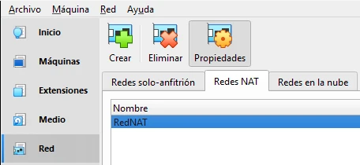
Oracle VirtualBox 7.2 (virtualbox.org) en Windows 11 Pro. Captura: elaboración propia.
Figura 3.56. La herramienta Red de VirtualBox, con una Red NAT creada.
Ejercicio interactivo
¿Qué modo de red?
Tres formas de practicar: elegir el modo para un caso, decir quién ve a quién en cada modo y deducir el modo a partir de la IP de la máquina.
Usa la tabla de quién ve a quién. Pista y Resolver ponen la racha a cero.
Pregunta a la clase
Quiero montar una web en mi máquina virtual y que la vea toda la clase. ¿Qué modo?
Depende de quién la tiene que ver
Toda la clase → adaptador puente.La máquina tiene una IP del aula y cualquier PC del aula llega a ella.
Solo yo, desde mi Windows → solo anfitrión.El anfitrión llega a la máquina, pero nadie más la ve.
Comprueba lo aprendido
Dos máquinas virtuales deben verse entre ellas, sin internet y sin el anfitrión. ¿Qué modo?
Selecciona una opción.
Práctica
Laboratorio de redes virtuales
En parejas, en clase, dos sesiones. Necesitáis dos máquinas Alpine en VirtualBox y el anfitrión.
1.Antes de probar, escribe tu predicción: quién ve a quién en cada modo.
2.En cada modo, anota la IP de cada máquina (ip a) y la del anfitrión (ipconfig).
3.Haz ping de una máquina a la otra, al anfitrión, desde el anfitrión y a internet. Anota si contesta.
4.Explica por escrito cada resultado que no coincida con tu predicción.
Los modos, en este orden
1NAT, las dos máquinas.
2Red NAT: créala antes y pon las dos en ella.
3Adaptador sólo anfitrión.
4Red interna, con la IP puesta a mano.
5Adaptador puente, si la red del centro lo permite.
Entrega
La tabla de predicción y resultado, con las explicaciones
Cubre
Criterios e y f del RA5
Práctica
Comandos del laboratorio
Alpine · pedir IP por DHCP
localhost:~# ip link set eth0 up
localhost:~# udhcpc -i eth0
Red interna · IP a mano (en la otra, 10.0.0.2)
localhost:~# ip link set eth0 up
localhost:~# ip addr add 10.0.0.1/24 dev eth0
Probar
localhost:~# ip a
localhost:~# ping -c 3 10.0.0.2
Alpine arranca con el teclado de Estados Unidos: el guion (-) está en la tecla del apóstrofo.
La tabla de la entrega
Modo
A la otra máquina
Al anfitrión
Desde el anfitrión
A internet
NAT
P · R
P · R
P · R
P · R
Red NAT
P · R
P · R
P · R
P · R
Solo anfitrión
P · R
P · R
P · R
P · R
Red interna
P · R
P · R
P · R
P · R
Puente
P · R
P · R
P · R
P · R
En cada casilla, P es tu predicción y R el resultado: ✓ si contesta y ✕ si no. Debajo de la tabla, la IP de cada máquina en cada modo.
Rendimiento
Lo que cuesta una máquina virtual
Procesador
El procesador de la máquina va casi a la velocidad real, gracias a VT-x o AMD-V.
Pierde poco
Memoria
La máquina le va quitando memoria al anfitrión según la usa, y puede llegar a usar toda la que se le ha dado.
Se reparte
Disco
El disco de la máquina es un archivo dentro del disco del anfitrión. Si ese disco es mecánico, se nota mucho.
Pierde bastante
Gráficos
La tarjeta gráfica de la máquina es imitada, así que los juegos y el 3D van mucho más lentos.
Es lo que más pierde
Para el anfitrión, cada máquina encendida es un proceso que se llama VirtualBoxVM.exe. Es el programa que dibuja la ventana de la máquina, y se ve en el Administrador de tareas como cualquier otro.
Rendimiento
Medir: pruebas de rendimiento
Una prueba de rendimiento (benchmark) es una tarea que se repite siempre igual para poder comparar los resultados. En esta unidad se usan tres:
●Speedometer (browserbench.org) mide lo rápido que va el navegador. Funciona fuera y dentro de la máquina sin instalar nada.
●Discos, el programa de Ubuntu, tiene la opción «Probar el rendimiento del disco…». Mide lo rápido que lee y escribe el disco virtual.
●7-Zip trae su propia prueba de compresión, en Windows y en Linux. Es opcional.
El método
1 Cierra todos los demás programas, fuera y dentro de la máquina.
2 Repite cada prueba tres veces y haz la media.
3 Cambia una sola cosa cada vez: los núcleos o la memoria.
4 Compara en porcentaje: lo que saca la máquina virtual, dividido entre lo que saca el anfitrión y multiplicado por 100.
Rendimiento · actividad del sistema
Observar la actividad
●En el anfitrión, el Administrador de tareas enseña la CPU y la memoria de cada proceso. La máquina encendida es VirtualBoxVM.exe; los otros procesos de VirtualBox son la ventana del administrador y sus servicios.
●En el invitado, el Monitor del sistema de Ubuntu enseña lo que pasa dentro de la máquina. En un invitado con Windows, es su Administrador de tareas.
●Mirando los dos a la vez: la máquina de la maqueta tiene su único núcleo al 100 % en un anfitrión de 8 hilos, y el anfitrión marca un 12 %, que es 1 de 8. Con 2 núcleos al 100 %, marcaría un 25 %.
●Ojo con la memoria: en la columna Memoria, el proceso de la máquina marca poco, 80 MB, aunque la máquina tiene 512 MB. La memoria que va usando la máquina se ve en Rendimiento › Memoria, dentro de la memoria en uso del anfitrión.
Administrador de tareas › Detalles— □ ✕
NombreCPUMemoriaDescripciónVirtualBoxVM.exe1280 MBVirtualBox Virtual MachineVirtualBox.exe0187 MBVirtualBox ManagerVBoxSVC.exe0010 MBVirtualBox InterfaceVBoxSDS.exe007 MBVirtualBox Global Interfacemsedge.exe01610 MBMicrosoft Edgeexplorer.exe0098 MBExplorador de Windows
Maqueta de elaboración propia con una máquina Alpine encendida (512 MB y 1 núcleo) en un anfitrión de 8 hilos. La memoria de los procesos de VirtualBox es la medida; la CPU es de ejemplo, con el núcleo de la máquina al 100 %.
Pregunta a la clase
Si le doy 8 núcleos y 12 GB a la máquina, ¿irá el doble de rápido?
El anfitrión tiene 8 hilos y 16 GB.
No: van peor los dos
✕Con 8 núcleos de 8 hilos, el anfitrión se queda sin procesador para él y para el propio VirtualBox.
✕Con 12 GB de 16, cuando la máquina llega a usarlos, a Windows le quedan 4 GB justos. En cuanto abre algo, tira del archivo de paginación (UT2) y todo va a tirones.
✓Con las reglas de reparto, le das como mucho 4 núcleos, y 12 GB solo si no hay nada más encendido.
Más recursos ayudan hasta un punto; después, estorban. Por eso hay que medir.
Comprueba lo aprendido
¿Cómo se llama en el anfitrión el proceso de una máquina de VirtualBox encendida?
Selecciona una opción.
Práctica
Pruebas de rendimiento
Se hace en clase, de forma individual y en una sesión, con tu máquina Ubuntu de la práctica 3.7. Los números son los de tu equipo.
1.Pasa Speedometer en el anfitrión tres veces y haz la media.
2.Pasa Speedometer en Firefox, dentro de Ubuntu, con 2 núcleos y 4 GB, tres veces. Mientras corre, anota la CPU y la memoria de VirtualBoxVM.exe, la memoria en uso del anfitrión y lo que marca el Monitor del sistema.
3.Apaga la máquina y repite con 1 núcleo y la misma memoria. Después, repite con 2 núcleos y 2 GB.
4.Mide el disco virtual con Discos, dentro de Ubuntu.
5.Rellena la ficha con los números, el porcentaje del anfitrión que consigue la máquina y dos líneas de conclusión.
Ejemplo de conclusión
«Con 2 núcleos la máquina saca el 78 % del anfitrión y con 1 núcleo, el 52 %. Bajar la memoria a 2 GB casi no cambia Speedometer, pero el escritorio se nota más lento.» (Números de ejemplo.)
Entrega
La ficha, en clase
Cubre
Criterios g y f del RA5
Práctica
Test masivo en clase
Un test de toda la unidad en takataka.io. El banco de preguntas es grande y cada alumno recibe un subconjunto distinto, al azar: no hay dos tests iguales.
Obliga a haber leído la unidad entera, no solo lo que se hace con VirtualBox, y a saber buscar rápido en las diapositivas.
Cubre sobre todo la teoría: máquina real y virtual, ventajas e inconvenientes, software libre y propietario, configuración y relación con el anfitrión (criterios a, b, c, e y f del RA5).
Práctica
Examen de la unidad
Tiene una parte de teoría y una parte práctica. Cómo es cada una se explica en clase, y la fecha se anuncia con al menos una semana.
Parte de teoría
Entra lo explicado en las secciones 3.1 a 3.10:
●La máquina real y la virtual, el anfitrión y el invitado, sus usos, sus ventajas y sus inconvenientes.
●Los hipervisores de tipo 1 y de tipo 2, VT-x y el hipervisor de Windows.
●VirtualBox, VMware e Hyper-V, sus licencias y las herramientas de integración.
●El hardware virtual, el reparto de recursos, los discos y los archivos de una máquina.
●Las instantáneas, los clones, los modos de red, el rendimiento y la actividad del sistema.
Criterios a, b, c, e, f y g del RA5.
Parte práctica
Se hace en VirtualBox, en tu ordenador. Tienes que saber hacer esto:
1Crear una máquina con la memoria, los procesadores, el disco y la red que se piden.
2Hacerle una instantánea con el nombre que se pide y sacar un clon enlazado.
3Arrancarla y comprobar la red con ip a y ping, o comprobar que arranca el instalador.
Criterios d y e del RA5.
Antes del examen
Cómo practicar para el examen
Trae hecho de casa lo siguiente: una racha de diez en cada ejercicio interactivo y la hoja por semilla, hecha en papel y comprobada con el solucionario.
Para la parte práctica
Si tienes ordenador en casa, instala VirtualBox, que es libre y gratuito. Repite lo que se hace en clase: crear una máquina con una ficha de la hoja, hacerle una instantánea, sacar un clon enlazado y cambiar el modo de red.
La tabla de quién ve a quién y las reglas de reparto de recursos hay que sabérselas de memoria.
Los ejercicios interactivos (pulsa para ir a cada uno)
Una máquina virtual es un programa que imita un ordenador completo. Dentro se instala un sistema operativo como en un PC de verdad.
Qué es
El anfitrión es el sistema instalado en el equipo real. Los invitados son los sistemas instalados dentro de las máquinas virtuales.
Qué es · ventajas
Lo que pasa dentro de la máquina se queda dentro, y con una instantánea se vuelve atrás en segundos. Además, se copia a otro equipo como unos archivos.
Qué es · inconvenientes
La máquina rinde menos que el equipo real y le quita memoria, procesador y disco. Además, cada sistema invitado necesita su licencia.
Cómo funciona
El hipervisor es el software que crea las máquinas virtuales y les reparte el hardware real. VirtualBox, VMware e Hyper-V son hipervisores.
Cómo funciona
Un hipervisor de tipo 1 se instala directamente sobre el hardware. Uno de tipo 2, como VirtualBox, funciona sobre un sistema operativo.
Cómo funciona
Para que la máquina vaya rápida, la ayuda del procesador para virtualizar, VT-x o AMD-V, tiene que estar activada en la UEFI.
Cómo funciona
Si Windows tiene su propio hipervisor en marcha, VirtualBox funciona a través de él. Entonces va más lento y enseña una tortuga verde.
Unidad 3
Resumen (2 de 3): el software y la máquina por dentro
El software
VirtualBox es software libre y gratuito. Con él se crean y se usan todas las máquinas virtuales del curso.
El software
VMware Workstation Pro es gratuito, pero propietario: gratis no es lo mismo que libre. Hyper-V viene incluido en Windows Pro.
El software
El Extension Pack de VirtualBox se descarga gratis, pero su licencia es propietaria. Añade, por ejemplo, el escritorio remoto. En el curso no se instala.
El software
Las Guest Additions se instalan dentro del invitado. Con ellas, la pantalla se ajusta a la ventana y se comparten el portapapeles y las carpetas con el anfitrión.
Por dentro
Una máquina tiene procesador, memoria, disco, red y pantalla virtuales. VirtualBox los imita con una parte de los recursos del equipo real.
Por dentro
El disco de la máquina es un archivo VDI. Si es dinámico, ocupa solo lo que se ha escrito; si es fijo, ocupa todo su tamaño desde el principio.
Por dentro
Cada máquina es una carpeta con su configuración (.vbox), su disco (.vdi) y las carpetas Snapshots y Logs.
Por dentro
Al anfitrión con Windows 11 hay que dejarle al menos 4 GB. A cada máquina se le da como mucho la mitad de los hilos del procesador.
Unidad 3
Resumen (3 de 3): crear, conectar y medir
Crear y usar
Para crear una máquina se elige la ISO y se desmarca la instalación desatendida. La tecla anfitrión, el Ctrl derecho, devuelve el teclado y el ratón a Windows.
Crear y usar
Una instantánea guarda cómo está la máquina para volver a ese punto en segundos. No sustituye a una copia de seguridad.
Crear y usar
Un clon completo es independiente, y uno enlazado ocupa poco pero necesita el original. Con OVA, la máquina se exporta en un solo archivo.
Redes
En NAT, el modo por defecto, cada máquina está sola en su red con la IP 10.0.2.15. Sale a internet, pero nadie llega a ella desde fuera.
Redes
En Red NAT, las máquinas de la misma red se ven entre ellas y salen a internet. Con el adaptador puente, la máquina es un equipo más del aula.
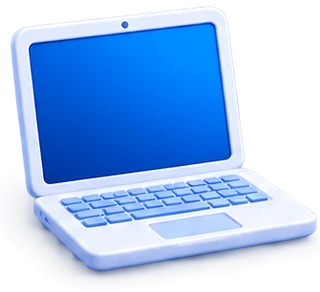
Redes
Con solo anfitrión, se ven el anfitrión y las máquinas de esa red, pero no hay internet. En la red interna solo se ven las máquinas, con la IP puesta a mano.
Rendimiento
El procesador pierde poco dentro de una máquina; el disco y los gráficos, mucho. Para el anfitrión, cada máquina encendida es un proceso VirtualBoxVM.exe.
Rendimiento
Para medir, se repite la misma prueba tres veces, cambiando una sola cosa cada vez, y se compara en porcentaje con el anfitrión.
Para ampliar
Recursos de la unidad
La documentación de los programas, las imágenes de instalación oficiales y las pruebas de rendimiento. Descarga siempre de la página oficial.
Esta unidadLos cuatro ejercicios interactivos y la hoja por semilla (hoja.html). Ctrl + P guarda las diapositivas en PDF.
Fin de la unidad 3
Dudas y preguntas
En clase se anuncian las fechas de las cuatro prácticas con VirtualBox, del test masivo y del examen. Tus máquinas se quedan en el aula para el resto del curso.
![Final del Resumen del sistema en Información del sistema: Seguridad basada en virtualización, No habilitado; Directiva de Control de aplicaciones para empresas, Impuesta; Directiva de modo de usuario de Control de aplicaciones para empresas, Desactivada; Compatibilidad automática con cifrado de dispositivo, Se necesita elevación de privilegios para ver; y cuatro filas de Hyper-V (Extensiones de modo de monitor VM, Extensiones de traducción de dirección de segundo nivel, Virtualización habilitada en Firmware y Protección de ejecución de datos), todas con Sí](img/captura-msinfo32-hipervisor.webp "Captura: elaboración propia")


 takataka.io · Plataforma de quizzes educativos con IA: crea, juega y aprende.
takataka.io · Plataforma de quizzes educativos con IA: crea, juega y aprende.